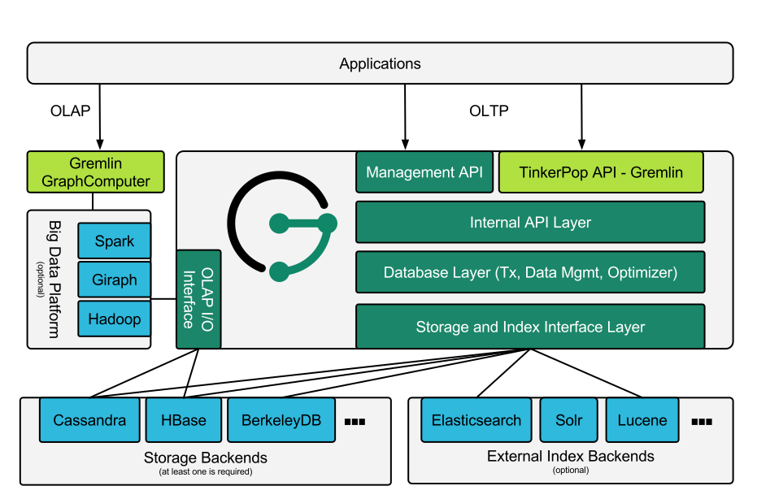

Introduction
The Benefits of JanusGraph
JanusGraph is designed to support the processing of graphs so large that they require storage and computational capacities beyond what a single machine can provide. Scaling graph data processing for real time traversals and analytical queries is JanusGraph’s foundational benefit. This section will discuss the various specific benefits of JanusGraph and its underlying, supported persistence solutions.
General JanusGraph Benefits
- Support for very large graphs. JanusGraph graphs scale with the number of machines in the cluster.
- Support for very many concurrent transactions and operational graph processing. JanusGraph’s transactional capacity scales with the number of machines in the cluster and answers complex traversal queries on huge graphs in milliseconds.
- Support for global graph analytics and batch graph processing through the Hadoop framework.
- Support for geo, numeric range, and full text search for vertices and edges on very large graphs.
- Native support for the popular property graph data model exposed by Apache TinkerPop.
- Native support for the graph traversal language Gremlin.
- Numerous graph-level configurations provide knobs for tuning performance.
- Vertex-centric indices provide vertex-level querying to alleviate issues with the infamous super node problem.
- Provides an optimized disk representation to allow for efficient use of storage and speed of access.
- Open source under the liberal Apache 2 license.
Benefits of JanusGraph with Apache Cassandra

- Continuously available with no single point of failure.
-
No read/write bottlenecks to the graph as there is no master/slave architecture.
-
Elastic scalability allows for the introduction and removal of machines.
- Caching layer ensures that continuously accessed data is available in memory.
- Increase the size of the cache by adding more machines to the cluster.
- Integration with Apache Hadoop.
- Open source under the liberal Apache 2 license.
Benefits of JanusGraph with HBase
- Tight integration with the Apache Hadoop ecosystem.
- Native support for strong consistency.
- Linear scalability with the addition of more machines.
- Strictly consistent reads and writes.
- Convenient base classes for backing Hadoop MapReduce jobs with HBase tables.
- Support for exporting metrics via JMX.
- Open source under the liberal Apache 2 license.
JanusGraph and the CAP Theorem
Despite your best efforts, your system will experience enough faults that it will have to make a choice between reducing yield (i.e., stop answering requests) and reducing harvest (i.e., giving answers based on incomplete data). This decision should be based on business requirements.
When using a database, the CAP theorem should be thoroughly considered (C=Consistency, A=Availability, P=Partitionability). JanusGraph is distributed with 3 supporting backends: Apache Cassandra, Apache HBase, and Oracle Berkeley DB Java Edition. Note that BerkeleyDB JE is a non-distributed database and is typically only used with JanusGraph for testing and exploration purposes.
HBase gives preference to consistency at the expense of yield, i.e. the probability of completing a request. Cassandra gives preference to availability at the expense of harvest, i.e. the completeness of the answer to the query (data available/complete data).
Getting Started
The examples in this section make extensive use of a toy graph distributed with JanusGraph called The Graph of the Gods. This graph is diagrammed below. The abstract data model is known as a Property Graph Model and this particular instance describes the relationships between the beings and places of the Roman pantheon. Moreover, special text and symbol modifiers in the diagram (e.g. bold, underline, etc.) denote different schematics/typings in the graph.

| visual symbol | meaning |
|---|---|
| bold key | a graph indexed key |
| bold key with star | a graph indexed key that must have a unique value |
| underlined key | a vertex-centric indexed key |
| hollow-head edge | a functional/unique edge (no duplicates) |
| tail-crossed edge | a unidirectional edge (can only traverse in one direction) |
Downloading JanusGraph and Running the Gremlin Console
JanusGraph can be downloaded from the
Releases section of
the project repository. Once retrieved and unpacked, a Gremlin Console
can be opened. The Gremlin Console is a
REPL
(i.e. interactive shell) that is distributed with JanusGraph and only
differs from the standard Gremlin Console insofar that JanusGraph is a
pre-installed and pre-loaded package. Alternatively, a user may choose
to install and activate JanusGraph in an existing Gremlin Console by
downloading the JanusGraph package from the central repository. In the
example below, janusgraph.zip is used, however, be sure to unzip the
zip-file that was downloaded.
Important
JanusGraph requires Java 8 (Standard Edition). Oracle Java 8 is
recommended. JanusGraph’s shell scripts expect that the $JAVA_HOME
environment variable points to the directory where JRE or JDK is
installed.
$ unzip janusgraph-0.2.3-hadoop2.zip
Archive: janusgraph-0.2.3-hadoop2.zip
creating: janusgraph-0.2.3-hadoop2/
...
$ cd janusgraph-0.2.3-hadoop2
$ bin/gremlin.sh
\,,,/
(o o)
-----oOOo-(3)-oOOo-----
09:12:24 INFO org.apache.tinkerpop.gremlin.hadoop.structure.HadoopGraph - HADOOP_GREMLIN_LIBS is set to: /usr/local/janusgraph/lib
plugin activated: tinkerpop.hadoop
plugin activated: janusgraph.imports
gremlin>
The Gremlin Console interprets commands using Apache Groovy. Groovy is a superset of Java that has various shorthand notations that make interactive programming easier. Likewise Gremlin-Groovy is a superset of Groovy with various shorthand notations that make graph traversals easy. The basic examples below demonstrate handling numbers, strings, and maps. The remainder of the tutorial will discuss graph-specific constructs.
gremlin> 100-10
==>90
gremlin> "JanusGraph:" + " The Rise of Big Graph Data"
==>JanusGraph: The Rise of Big Graph Data
gremlin> [name:'aurelius', vocation:['philosopher', 'emperor']]
==>name=aurelius
==>vocation=[philosopher, emperor]
Tip
Refer to Apache TinkerPop, SQL2Gremlin, and Gremlin Recipes for more information about using Gremlin.
Loading the Graph of the Gods Into JanusGraph
The example below will open a JanusGraph graph instance and load The
Graph of the Gods dataset diagrammed above. JanusGraphFactory
provides a set of static open methods, each of which takes a
configuration as its argument and returns a graph instance. This
tutorial calls one of these open methods on a configuration that uses
the BerkeleyDB storage backend and the
Elasticsearch index backend, then loads The Graph of
the Gods using the helper class GraphOfTheGodsFactory. This section
skips over the configuration details, but additional information about
storage backends, index backends, and their configuration are available
in Storage Backends, Index Backends, and
Configuration Reference.
gremlin> graph = JanusGraphFactory.open('conf/janusgraph-berkeleyje-es.properties')
==>standardjanusgraph[berkeleyje:../db/berkeley]
gremlin> GraphOfTheGodsFactory.load(graph)
==>null
gremlin> g = graph.traversal()
==>graphtraversalsource[standardjanusgraph[berkeleyje:../db/berkeley], standard]
The JanusGraphFactory.open() and GraphOfTheGodsFactory.load() methods
do the following to the newly constructed graph prior to returning it:
- Creates a collection of global and vertex-centric indices on the graph.
- Adds all the vertices to the graph along with their properties.
- Adds all the edges to the graph along with their properties.
Please see the GraphOfTheGodsFactory source code for details.
For those using JanusGraph/Cassandra (or JanusGraph/HBase), be sure to
make use of conf/janusgraph-cql-es.properties (or
conf/janusgraph-hbase-es.properties) and
GraphOfTheGodsFactory.load().
gremlin> graph = JanusGraphFactory.open('conf/janusgraph-cql-es.properties')
==>standardjanusgraph[cql:[127.0.0.1]]
gremlin> GraphOfTheGodsFactory.load(graph)
==>null
gremlin> g = graph.traversal()
==>graphtraversalsource[standardjanusgraph[cql:[127.0.0.1]], standard]
You may also use the conf/janusgraph-cql.properties,
conf/janusgraph-berkeleyje.properties, or
conf/janusgraph-hbase.properties configuration files to open a graph
without an indexing backend configured. In such cases, you will need to
use the GraphOfTheGodsFactory.loadWithoutMixedIndex() method to load
the Graph of the Gods so that it doesn’t attempt to make use of an
indexing backend.
gremlin> graph = JanusGraphFactory.open('conf/janusgraph-cql.properties')
==>standardjanusgraph[cql:[127.0.0.1]]
gremlin> GraphOfTheGodsFactory.loadWithoutMixedIndex(graph, true)
==>null
gremlin> g = graph.traversal()
==>graphtraversalsource[standardjanusgraph[cql:[127.0.0.1]], standard]
Global Graph Indices
The typical pattern for accessing data in a graph database is to first locate the entry point into the graph using a graph index. That entry point is an element (or set of elements) — i.e. a vertex or edge. From the entry elements, a Gremlin path description describes how to traverse to other elements in the graph via the explicit graph structure.
Given that there is a unique index on name property, the Saturn vertex
can be retrieved. The property map (i.e. the key/value pairs of Saturn)
can then be examined. As demonstrated, the Saturn vertex has a name of
"saturn, " an age of 10000, and a type of "titan." The grandchild of
Saturn can be retrieved with a traversal that expresses: "Who is
Saturn’s grandchild?" (the inverse of "father" is "child"). The result
is Hercules.
gremlin> saturn = g.V().has('name', 'saturn').next()
==>v[256]
gremlin> g.V(saturn).valueMap()
==>[name:[saturn], age:[10000]]
gremlin> g.V(saturn).in('father').in('father').values('name')
==>hercules
The property place is also in a graph index. The property place is
an edge property. Therefore, JanusGraph can index edges in a graph
index. It is possible to query The Graph of the Gods for all events
that have happened within 50 kilometers of
Athens (latitude:37.97 and
long:23.72). Then, given that information, which vertices were involved
in those events.
gremlin> g.E().has('place', geoWithin(Geoshape.circle(37.97, 23.72, 50)))
==>e[a9x-co8-9hx-39s][16424-battled->4240]
==>e[9vp-co8-9hx-9ns][16424-battled->12520]
gremlin> g.E().has('place', geoWithin(Geoshape.circle(37.97, 23.72, 50))).as('source').inV().as('god2').select('source').outV().as('god1').select('god1', 'god2').by('name')
==>[god1:hercules, god2:hydra]
==>[god1:hercules, god2:nemean]
g.V) or all edges (g.E) that satisfy one or multiple
constraints (e.g. has or interval). The second aspect of indexing in
JanusGraph is known as vertex-centric indices. Vertex-centric indices
are utilized to speed up traversals inside the graph. Vertex-centric
indices are described later.
Graph Traversal Examples
Hercules, son of Jupiter and Alcmene, bore super human strength. Hercules was a Demigod because his father was a god and his mother was a human. Juno, wife of Jupiter, was furious with Jupiter’s infidelity. In revenge, she blinded Hercules with temporary insanity and caused him to kill his wife and children. To atone for the slaying, Hercules was ordered by the Oracle of Delphi to serve Eurystheus. Eurystheus appointed Hercules to 12 labors.
In the previous section, it was demonstrated that Saturn’s grandchild
was Hercules. This can be expressed using a loop. In essence, Hercules
is the vertex that is 2-steps away from Saturn along the in('father')
path.
gremlin> hercules = g.V(saturn).repeat(__.in('father')).times(2).next()
==>v[1536]
Hercules is a demigod. To prove that Hercules is half human and half
god, his parent’s origins must be examined. It is possible to traverse
from the Hercules vertex to his mother and father. Finally, it is
possible to determine the type of each of them — yielding "god" and
"human."
gremlin> g.V(hercules).out('father', 'mother')
==>v[1024]
==>v[1792]
gremlin> g.V(hercules).out('father', 'mother').values('name')
==>jupiter
==>alcmene
gremlin> g.V(hercules).out('father', 'mother').label()
==>god
==>human
gremlin> hercules.label()
==>demigod
The examples thus far have been with respect to the genetic lines of the
various actors in the Roman pantheon. The Property Graph Model
is expressive enough to represent multiple types of things and
relationships. In this way, The Graph of the Gods also identifies
Hercules' various heroic exploits --- his famous 12 labors. In the
previous section, it was discovered that Hercules was involved in two
battles near Athens. It is possible to explore these events by
traversing battled edges out of the Hercules vertex.
gremlin> g.V(hercules).out('battled')
==>v[2304]
==>v[2560]
==>v[2816]
gremlin> g.V(hercules).out('battled').valueMap()
==>[name:[nemean]]
==>[name:[hydra]]
==>[name:[cerberus]]
gremlin> g.V(hercules).outE('battled').has('time', gt(1)).inV().values('name')
==>cerberus
==>hydra
The edge property time on battled edges is indexed by the
vertex-centric indices of a vertex. Retrieving battled edges incident
to Hercules according to a constraint/filter on time is faster than
doing a linear scan of all edges and filtering (typically O(log n),
where n is the number incident edges). JanusGraph is intelligent
enough to use vertex-centric indices when available. A toString() of a
Gremlin expression shows a decomposition into individual steps.
gremlin> g.V(hercules).outE('battled').has('time', gt(1)).inV().values('name').toString()
==>[GraphStep([v[24744]],vertex), VertexStep(OUT,[battled],edge), HasStep([time.gt(1)]), EdgeVertexStep(IN), PropertiesStep([name],value)]
More Complex Graph Traversal Examples
In the depths of Tartarus lives Pluto. His relationship with Hercules was strained by the fact that Hercules battled his pet, Cerberus. However, Hercules is his nephew — how should he make Hercules pay for his insolence?
The Gremlin traversals below provide more examples over The Graph of
the Gods. The explanation of each traversal is provided in the prior
line as a // comment.
Cohabiters of Tartarus
gremlin> pluto = g.V().has('name', 'pluto').next()
==>v[2048]
gremlin> // who are pluto's cohabitants?
gremlin> g.V(pluto).out('lives').in('lives').values('name')
==>pluto
==>cerberus
gremlin> // pluto can't be his own cohabitant
gremlin> g.V(pluto).out('lives').in('lives').where(is(neq(pluto))).values('name')
==>cerberus
gremlin> g.V(pluto).as('x').out('lives').in('lives').where(neq('x')).values('name')
==>cerberus
Pluto’s Brothers
gremlin> // where do pluto's brothers live?
gremlin> g.V(pluto).out('brother').out('lives').values('name')
==>sky
==>sea
gremlin> // which brother lives in which place?
gremlin> g.V(pluto).out('brother').as('god').out('lives').as('place').select('god', 'place')
==>[god:v[1024], place:v[512]]
==>[god:v[1280], place:v[768]]
gremlin> // what is the name of the brother and the name of the place?
gremlin> g.V(pluto).out('brother').as('god').out('lives').as('place').select('god', 'place').by('name')
==>[god:jupiter, place:sky]
==>[god:neptune, place:sea]
Finally, Pluto lives in Tartarus because he shows no concern for death. His brothers, on the other hand, chose their locations based upon their love for certain qualities of those locations.!
gremlin> g.V(pluto).outE('lives').values('reason')
==>no fear of death
gremlin> g.E().has('reason', textContains('loves'))
==>e[6xs-sg-m51-e8][1024-lives->512]
==>e[70g-zk-m51-lc][1280-lives->768]
gremlin> g.E().has('reason', textContains('loves')).as('source').values('reason').as('reason').select('source').outV().values('name').as('god').select('source').inV().values('name').as('thing').select('god', 'reason', 'thing')
==>[god:neptune, reason:loves waves, thing:sea]
==>[god:jupiter, reason:loves fresh breezes, thing:sky]
Architectural Overview
JanusGraph is a graph database engine. JanusGraph itself is focused on compact graph serialization, rich graph data modeling, and efficient query execution. In addition, JanusGraph utilizes Hadoop for graph analytics and batch graph processing. JanusGraph implements robust, modular interfaces for data persistence, data indexing, and client access. JanusGraph’s modular architecture allows it to interoperate with a wide range of storage, index, and client technologies; it also eases the process of extending JanusGraph to support new ones.
Between JanusGraph and the disks sits one or more storage and indexing adapters. JanusGraph comes standard with the following adapters, but JanusGraph’s modular architecture supports third-party adapters.
- Data storage:
- Indices, which speed up and enable more complex queries:
Broadly speaking, applications can interact with JanusGraph in two ways:
-
Embed JanusGraph inside the application executing Gremlin queries directly against the graph within the same JVM. Query execution, JanusGraph’s caches, and transaction handling all happen in the same JVM as the application while data retrieval from the storage backend may be local or remote.
-
Interact with a local or remote JanusGraph instance by submitting Gremlin queries to the server. JanusGraph natively supports the Gremlin Server component of the Apache TinkerPop stack.
